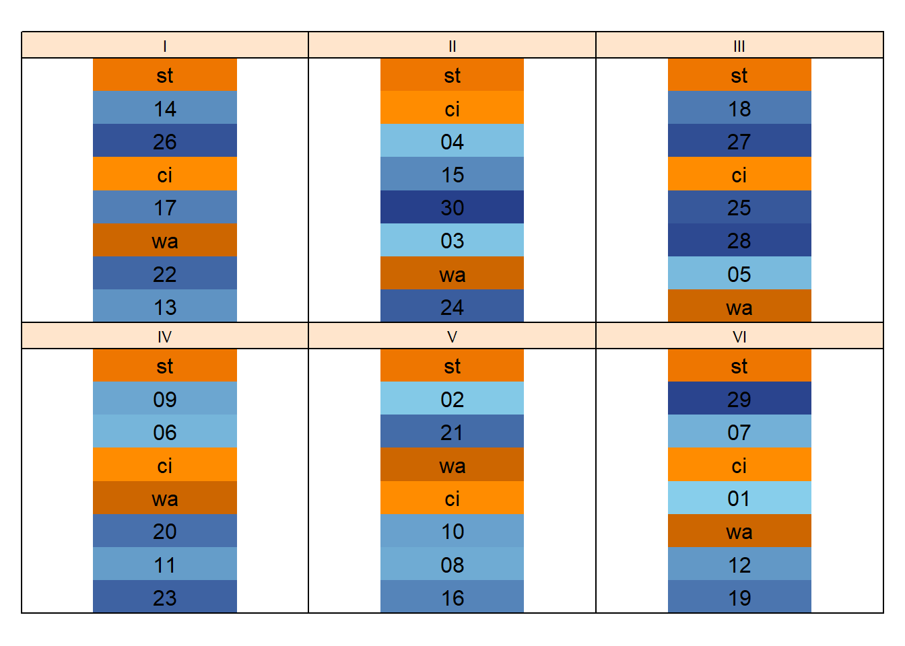
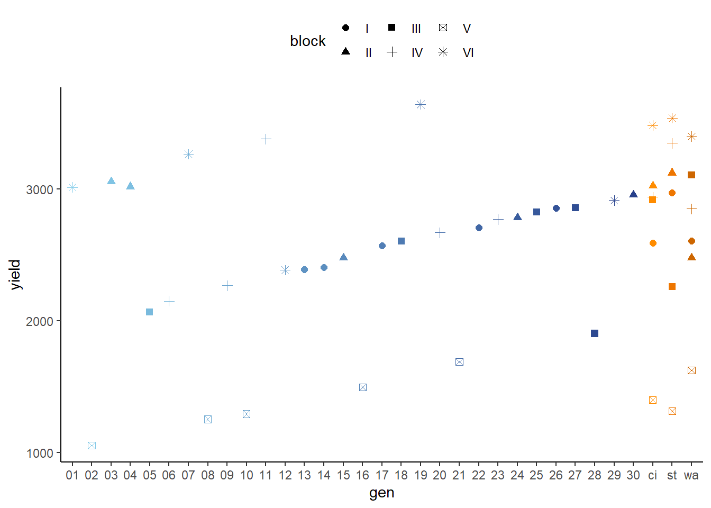

Augmented Design - Blockeffekt fest oder zufällig?
Dieses Beispiel entspricht Example 4 aus dem Skript zur Vorlesung “Mixed models for metric data” von Prof. Dr. Piepho. In dem Skript finden sich weitere Erläuterungen, sowie SAS Codes.
Datensatz
Die Daten in diesem Beispiel stammen von einem Versuch, der als die einfachste Form eines augmented Designs angelegt wurde. Der Versuch hat 6 Blöcke (I-VI; mit je 8 Parzellen) und es wurde der Ertrag von Sorten geprüft. Allerdings wurden im Gegensatz zu einer einfachen randomisierten, vollständigen Blockanlage nicht jede Sorte in jedem Block angebaut - einige aber schon:
## Please use desplot(data,form) instead of desplot(form,data)
Wie man sieht, tauchen die drei Sorten ci, st und wa (orange) in jedem Block auf, alle anderen Sorten (01-30, blau) wurden aber nur je ein einziges Mal geprüft. Somit gibt es also insgesamt 33 Sorten, allerdings nur 3 davon in 6 Wiederholungen und alle anderen in einer Wiederholung.
Die Idee hinter dem Design ist, dass mittels der wiederholten Sorten (auch Standards genannt) die Blockeffekte geschätzt werden können und dann die eigentlich zu prüfenden Sorten über die Standards geschätzt werden. Man könnte auch sagen, dass die Sorten quasi an den Standards gemessen werden, weswegen übrigens für die Standards in der Regel meist sehr bekannte, gängige Sorten genommen werden. Klar ist, dass man auf diese Weise nicht so gute Schätzungen für die Sorten erhält, wie wenn man sie wiederholt geprüft hätte. Immerhin erhält man aber Schätzungen und zwar für relativ viele Sorten auf relativ wenig Parzellen. Genau dies ist eine Hauptmotivation für ein augmented Design: (i) Es erlaubt das Prüfen von sehr vielen Prüfgliedern wenn die Versuchskapazitäten begrenzt sind. Andersherum erlaubt es aber auch z.B. (ii) das prüfen von neuen Sorten, für die noch nicht genug Saatgut vorhanden ist um mehrere Parzellen anzulegen.
Deskriptive Statistik
Beim betrachten von deskriptiven Statistiken muss sich in diesem Beispiel vor Augen geführt werden, dass wir z.B. keinen Mittelwert für die Sorten 01-30 berechnen können, da wir schlichtweg nur eine Beobachtung pro Sorte haben. Um sich dies endgültig zu verdeutlichen wählen wir den Plot hierunter.
print(patt, nrows=10)## gen yield block
## 1: st 2972 I
## 2: 14 2405 I
## 3: 26 2855 I
## 4: ci 2592 I
## 5: 17 2572 I
## ---
## 44: ci 3483 VI
## 45: 01 3013 VI
## 46: wa 3400 VI
## 47: 12 2385 VI
## 48: 19 3643 VIstr(patt)## Classes 'data.table' and 'data.frame': 48 obs. of 3 variables:
## $ gen : Factor w/ 33 levels "01","0"..
## $ yield: num 2972 2405 2855 2592 257..
## $ block: Factor w/ 6 levels "I","II""..
## - attr(*, ".internal.selfref")=<exter..ggplot(data=patt, aes(y=yield, x=gen, color=gen, shape=block)) +
geom_point(size=2) +
scale_color_manual(values=StandardFarben) + # Vektor mit Farben wurde vorher definiert
guides(color = FALSE) + # Verstecke Legende zu Colors, aber nicht zu Shapes
theme_classic() + theme(legend.position = "top")
Was wir an diesem Plot auch erkennen können ist, dass Block V anscheinend generell schlechtere Wachstumsbedingungen für die Sorten geboten hat. Man könnte auf den ersten Blick vermuten, dass die Sorten 02, 08, 10, 16 und 21 schlichtweg nicht so hohe Erträge liefern, jedoch liefern auch die drei Standards deutlich schlechtere Erträge in Block V verglichen mit den anderen Blöcken. Gemessen an den Standards wirkt speziell Sorte 21 also doch vielversprechend - auch wenn wir dieser Vermutung nur eine einzige Beobachtung zugrunde legen.
Schließende Statistik
Das Modell für die Daten lautet
\[ yield_{ij} = \mu + gen_i + block_j + e_{ij} \]
Da wir die Sorten miteinander vergleichen wollen, nehmen wir sie als festen Effekt. Bei den Blöcken ist die Entscheidung nicht ganz so schnell gefällt: Zum Einen kann es bei unvollständigen Blöcken von Vorteil sein sie als zufällig ins Modell zu nehmen, zum Anderen gibt es aber auch die Faustregel, dass man Blockeffekte erst ab 8 Blöcken als zufällig nehmen sollte. Wir wollen in diesem Beispiel beide Modelle anpassen und dann entscheiden welches Modell wir nehmen sollten. Dies können wir davon abhängig machen in welchem der Modelle der mittlere s.e.d. (standard error of a difference) der Differenzen zwischen den adjustierten Sortenmittelwerten kleiner ist. Je kleiner dieser s.e.d., desto präziser können wir nämlich die Sortenunterschiede schätzen - und das ist was uns in diesem Versuch interessiert: Ein Vergleich der Sorten. Zur Klarstellung: Es gibt Standardfehler für jeden der adjustierten Mittelwerte selbst (standard error of a mean), aber wir möchten hier die Standardfehler der Differenzen zwischen den adjustierten Mittelwerten betrachten!
Vergleich beider Modelle
# Fester Blockeffekt
mod.fixBl <- lm(yield ~ gen + block,
data=patt)library(lme4) # Zufälliger Blockeffekt
mod.ranBl <- lmer(yield ~ gen + (1|block),
data=patt)Wir überspringen hier also mal die ANOVA und ermitteln direkt die mittleren s.e.d. der beiden Modelle. Dazu berechnen wir voererstwie gehabt die adjustierten Mittelwerte und alle Kontraste zwischen ihnen mit dem emmeans package. Im Anschluss ziehen wir uns aber nur die Spalte mit allen s.e.d. raus und berechnen jeweils den Mittelwert.
emm.fixBl <- emmeans(mod.fixBl, pairwise~"gen")
print(as.data.table(emm.fixBl$emmeans)[,1:3], nrows=10)## gen emmean SE
## 1: 01 2260.222 341.1876
## 2: 02 2329.889 341.1876
## 3: 03 2901.889 341.1876
## 4: 04 2864.889 341.1876
## 5: 05 2024.222 341.1876
## ---
## 29: 29 2162.222 341.1876
## 30: 30 2801.889 341.1876
## 31: ci 2725.667 123.2225
## 32: st 2759.167 123.2225
## 33: wa 2677.833 123.2225dif.fixBl <- as.data.table(emm.fixBl$contrasts)
print(dif.fixBl[,1:3], nrows=10)## contrast estimate SE
## 1: 01 - 02 -69.66667 492.8899
## 2: 01 - 03 -641.66667 492.8899
## 3: 01 - 04 -604.66667 492.8899
## 4: 01 - 05 236.00000 492.8899
## 5: 01 - 06 437.33333 492.8899
## ---
## 524: 30 - st 42.72222 362.7571
## 525: 30 - wa 124.05556 362.7571
## 526: ci - st -33.50000 174.2629
## 527: ci - wa 47.83333 174.2629
## 528: st - wa 81.33333 174.2629mean(dif.fixBl$SE)## [1] 461.3938emm.ranBl <- emmeans(mod.ranBl, pairwise~"gen")
print(as.data.table(emm.ranBl$emmeans)[,1:3], nrows=10)## gen emmean SE
## 1: 01 2309.430 434.8634
## 2: 02 2246.552 434.8634
## 3: 03 2911.897 434.8634
## 4: 04 2874.897 434.8634
## 5: 05 2026.888 434.8634
## ---
## 29: 29 2211.430 434.8634
## 30: 30 2811.897 434.8634
## 31: ci 2725.667 295.8887
## 32: st 2759.167 295.8887
## 33: wa 2677.833 295.8887dif.ranBl <- as.data.table(emm.ranBl$contrasts)
dif.ranBl[,1:3]## contrast estimate SE
## 1: 01 - 02 62.87705 493.6947
## 2: 01 - 03 -602.46789 493.6947
## 3: 01 - 04 -565.46789 493.6947
## 4: 01 - 05 282.54174 493.6947
## 5: 01 - 06 465.28888 493.6947
## ---
## 524: 30 - st 52.73073 363.2128
## 525: 30 - wa 134.06406 363.2128
## 526: ci - st -33.50000 174.2629
## 527: ci - wa 47.83333 174.2629
## 528: st - wa 81.33333 174.2629mean(dif.ranBl$SE)## [1] 462.0431Schließlich sehen wir, dass der mittlere s.e.d. im Modell mit festem Blockeffekt ein wenig kleiner ist, sodass wir uns für dieses Modell entscheiden würden um möglichst präzise die Sorten miteinander vergleichen zu können. Wichtig bei diesem Vergleich ist, dass die s.e.d. der adjustierten Mittelwertdifferenzen für das gemischte Modelle unbedingt mit einer Approximation wie z.B. der Kenward-Roger-Methode oder Satterthwaite-Methode berechnet werden sollten - dies wird von der emmeans() Funktion allerdings standardmäßig getan. Mehr zu dem Thema im Kapitel zu gemischten Modellen.
Demnach würden wir ab hier wie in den vorangegangenen Beispielen (eine ANOVA durchführen um zu prüfen ob der Sorteneffekt signifikant ist und) post-hoc-Tests für die Sortenmittelwertvergleiche durchführen.
Bei Fragen kannst du mir gerne schreiben!
schmidtpaul@hotmail.de